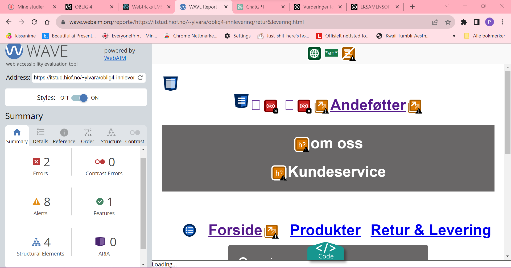
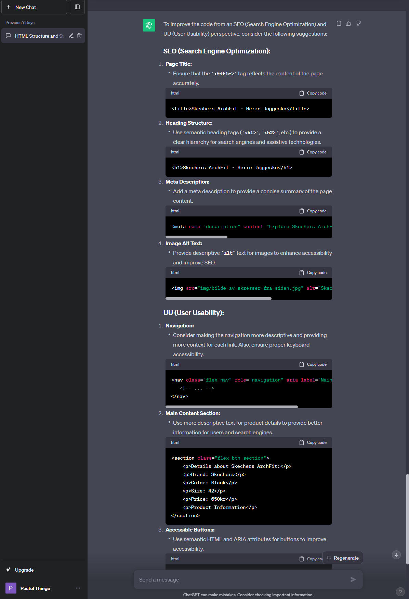
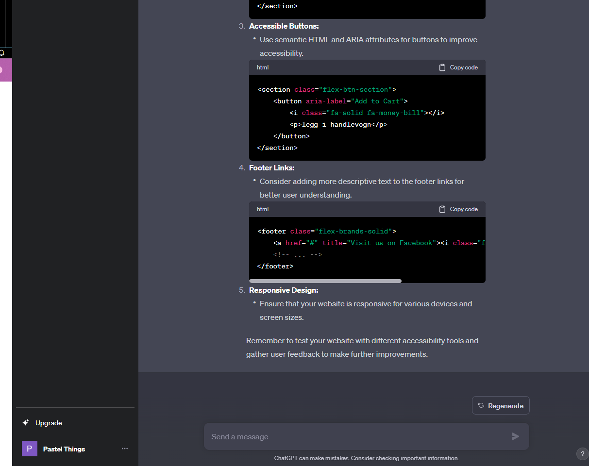
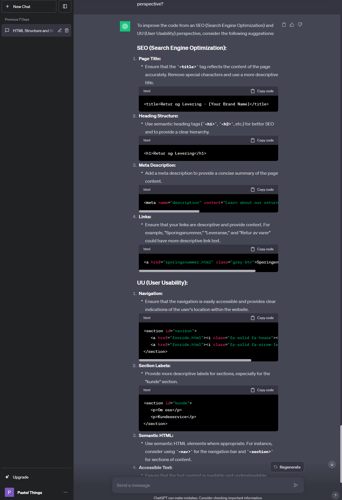
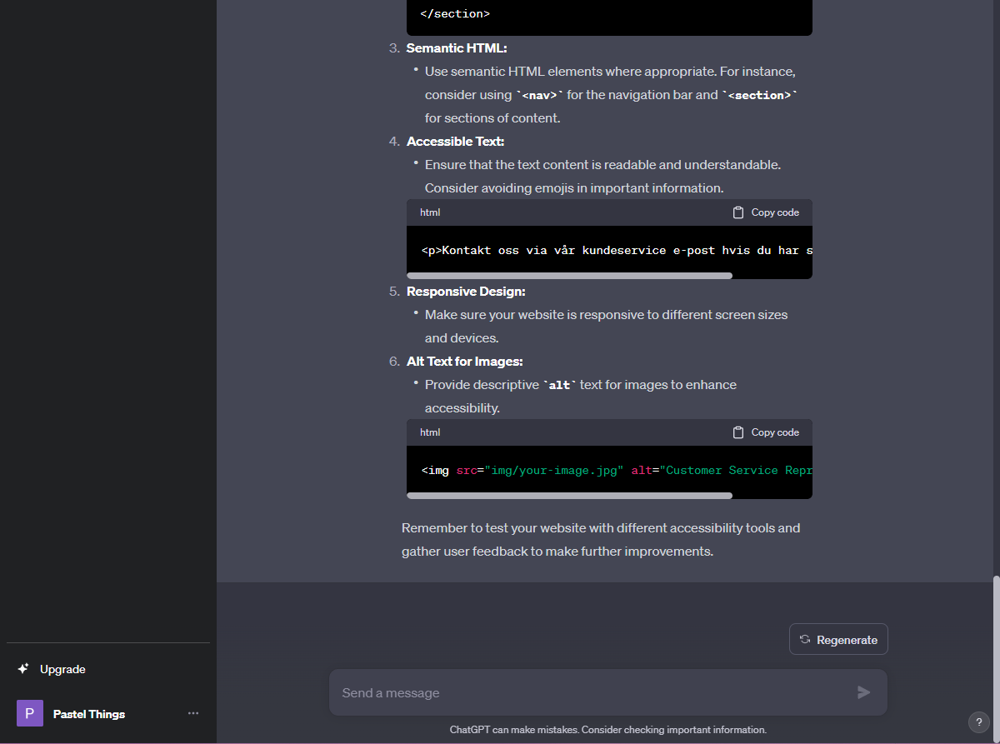
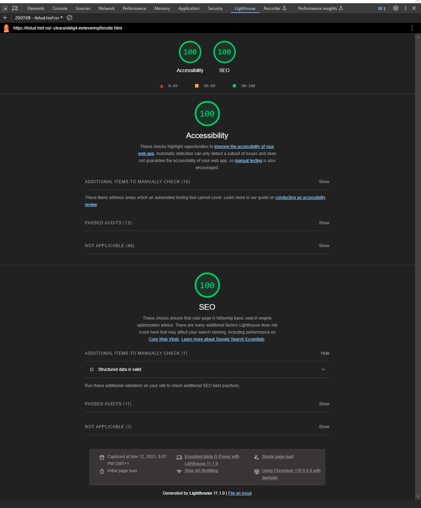
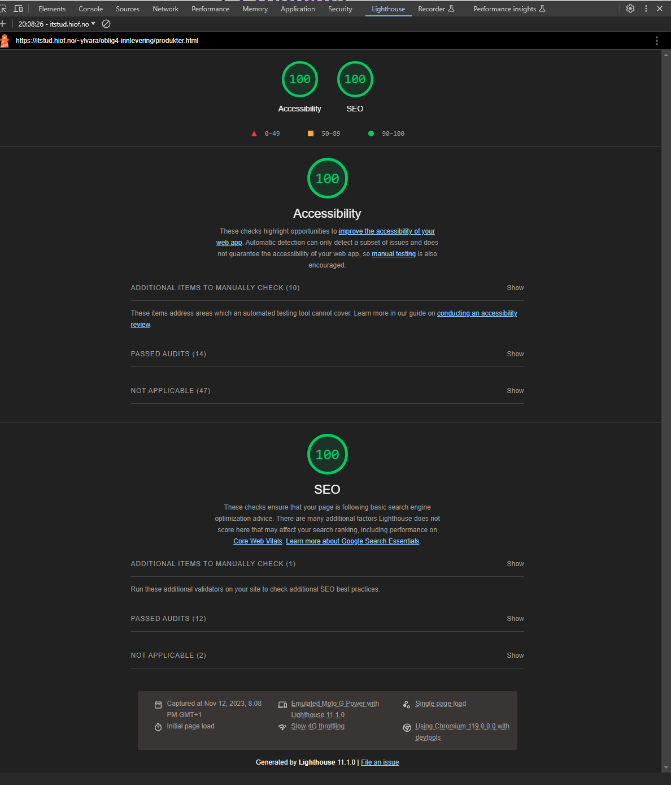
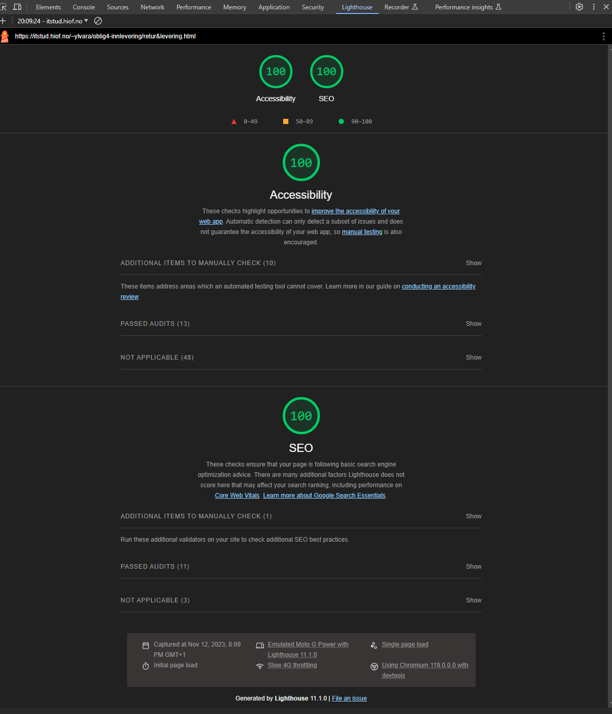
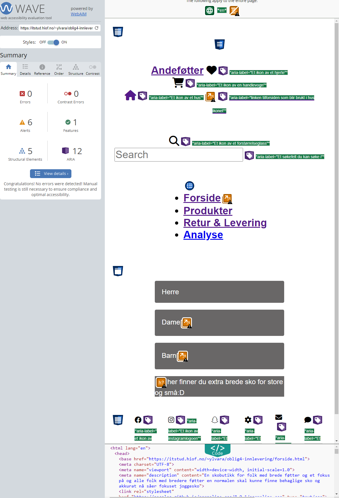
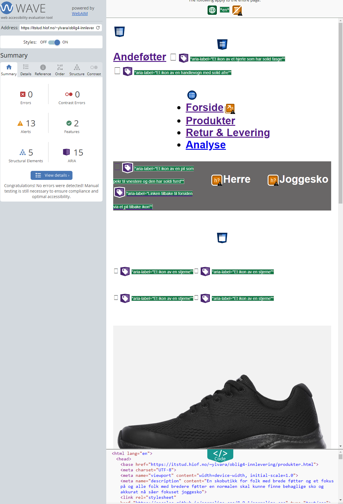

…
Analyse av nettstedet
Nøkkelord
- Joggesko er et søkeord som passet til sko nettsiden jeg lagde, på grunn av google trends så ga den størst søker treff i hele norge og flertallet av nordmenn brukte joggesko ordet som søke ord når de søkte på joggesko og siden min side akkurat nå ahr kun joggesko så føler jeg det passer.
- Sko er et søkeord som passer til nettsiden siden det var et søkeord som er vedlig bredt brukt og er relevant for nettsiden så tenker jeg og bruke den
- Brede føtter er ikke et mye brukt søkeord men er forsatt brutk som et søkeord, og mest sannsynlig blitt brukt av folk som ser etter sko som er bredere en normalen. Og siden min nettside har extra fokus på folk med brede føtter og motto for butikkken er jo "her finner du extra brede sko for store og små:D" så føler jeg det passer. Og grunnen til at jeg ikke brukte extra brede sko var at det var ikke like mye søkt på som brede føtter.
Lighthouse
Når jeg kjørte nettisiden igjennom lighthouse så virket lighthouse veldig fornøyd med nettsiden på forsiden så scoret jeg 91 performance, 91 accessibility, 100 best practices
,91 seo. Disse testene ble kjørt for mobil versjon i lighthouse på grunna siden skulle være optimalisert for mobile first også tilpasses desktop etter på så jeg syntes mobile
first resulatene var viktigere en desktop versjonen jeg sjekket den under testing men velger å priotere og vise mobil på analysen siden det var det som var viktig.

Lighthouse sa at linkene til tre av mine ikoner på forsiden som er hjerte, handlevogn og huset ikke hadde "Links do not have discernible name" som betyr at det ville vært vanskelig for brukere som bruker
opplesning verktøy ville ha slittet med og finne disse. Så den anbefalte å lage linker som var unike og lette og fokusere på for det ville gjøre navigasjons prossesen til skjerm oppleser
bedre en det var før. Lighthosue påpekte også at forside dokumentet ikke hadde en meta forklaring. Og mente forbedringen var å formatere html på en måte som tillot crawlers til å lettere
forstå innholdet på siden.
på produktsiden så scoret jeg 99 performance, 92 accessibility, 100 best practices
,90 seo. Det kom opp samme feil på produktsiden som det gjorde på forsiden med at siden ikke hadde unike eller froksjellige navn nok på ikone på siden. samme feil kom også opp om
min meta ikke hadde noe forklaring. og noe extra som dukket opp på produktsiden var en warning på at tap targets ikke var tilpasset med en passe størrelse. Kommemtaren var
"Tap targets are not sized appropriately". Og jeg fikk også bedksjed om å passe på at siden var mobilvennlig sånn at de skulle slippe og pince og zoome for lese siden.
på retur og leveringssiden så scoret jeg 100 performance, 91 accessibility, 100 best practices
,91 seo.
Jeg fikk igjen samme feil som var meta har ikke unike navn, som betyr at nettsiden min er såpass lik at de samme feil dukker opp på alle tre sider. Som da betyr
at når den ene siden har blitt fikset og ikke har den feilen lenger så gjør man bare den endringen på alle tre og vil da ha fikset alle tre. Fikk anbefalt på retur og leveringssiden
og legge til en måte og hoppe over repetift innhold som lar tastatur brukere, bruke nettsiden mer effektivt.
WebAim

webaim virket også ganske fornøyd med nettsiden på forside så sa den at jeg hadde 4 errors som jeg syns ikke er så ille med tanke på at på tiden
av testingen så funket ikke media queries min. Webaim sa at en av errors var at jeg manglet en form label, som betyr at en form control ikke hadde en
korrosponderne label/navn. Og proplemet med at form labelen ikke har en assosiert tekstlig label/ merkelapp, er at label jeg har brukt kan hende ikke vises for
skjermleser brukere. De tre andre errors er at jeg har tomme linker, som betyr at linkene ikke har noe text i seg. Og det betyr at funksjonen eller meningen
av linken vil ikke bli visst for brukerne, og dette kan lede til forrvirring for tastatur og skjermleser brukere.
Webaim ga syv advarsler på forsiden, og en av de var at headingen ikke hadde noe struktur som egentlig bare betyr at siden ikke har noe headings. To av advarslene
er at det kan være heading, som betyr at teksten vises til og være en heading men det er ikke noe heading element. Og de fire siste advarslene er at siden har overflødige linker
som er ved sidan hverandre går til samme URl.

på produktsiden så fikk jeg tre errors som jeg ble overraqsket over siden jeg har mer fyll på den siden og at den hadde mindre errors en forsiden var en
posetiv overraskelse. Og produktsiden var alle tre errors det samme og var samme feil som på forsiden, feilene var tomme linker som ikke hadde noe tekst i seg.
Derimot så fikk jeg 13 advarsler på produktsiden, den første advarslenen var lik som forsiden med at headingen ikke hadde noe struktur. Og jeg hadde 11 advarsler med samme
advarsel på og det var det samme som forsiden at det kanskje kan være en heading og at tekst så ut til og være en heading men ikke noe heading element.
og den siste advarslet som også var likt som på forsiden var at siden hadde overflødige linker som er ved sdian hverandre og går til samme URL.

på retur og leveringsiden så fikk jeg bare 2 errors som gjorde meg veldig fornøyd med at jeg hadde så få erros i koden jeg hadde skrevet. De to errors er det samme som både forside
og produktside som er tomme linker. Og jeg har åtte advarsler på retur og leverings siden og de var det samme som på det to forrige sidene. og første advarsel er ikke noe
heading struktur og at siden ikke har noe heading. og to av de er kan være en heading og teksten virker til å være en heading men ikke noe heading element. og de fem
siste advarslene er at siden overflødige linker og at linkene går til samme URL.
Chat GPT
chatgpt ga meg fire punkter til forbedring av SEO, den første var at jeg skulle adde var en menningsfull title tag. Nummer 2 var at jeg skulle adde en meta beskrivelse, og nummer 3 var at jeg skulle adde
en sematic HTML. Og til slutt en heading struktur. For UU så ga chatgpt meg 7 punkter til forbedring av UU, nummer 1 var "Labeling for accessibility". Nummmer to var
nsvigasjon roller for ARIA. Nummer 3 var at jeg husket og adde en alt tag til bildene på siden. Nummer 4 er "Form Accessibility" og nummmer 5 var sikker på at du hadde et
responsivt design. Nummer 6 var at jeg måtte forsikre meg at jeg hadde spesifisert hvilket språk jeg hadde og bruke språk attribute. Og til slutt nummer 7 der den sa at vis
siden din er tilgjenlig i flere språk så skulle jeg bruke href-lang Attribute.




Sammenligning
jeg skal lage en tabbel på denne siden med tre kolloner, en for chat gpt resultater, en for lighthouse resulater og en fro webaim resultater. I tabellen så skal jeg sammenligne resultatee av de tre. f.eks er det noe lighthouse reager på som chat gpt ikke reagerer på og vise versa?
| lighthouse |
webaim |
chatgpt |
| lighthouse resulater:
Ga meg til sammen fire rød trekanter jeg måtte titte på.
Lighthouse reagerte på meta beskrivelse og linkene ikke har unike eller froksjellige navn.
|
webaim resultater:
Sier jeg har totalt 8 errorer på min nettside, 4 på forside, 3 på produkter og 2 på retur og levering siden.
Webaim reagerte på at jeg hadde mangledne form label/ merkelapp eller at den ikke hadde den responderne labelen. og den reagerte på at jeg hadde tomm elinker
eller at de ikke inneholdt noe tekst.
|
chatgpt resultater:
Chatgpt reagerte på title taggen ikke var meningsfull nok og at metan ikke hadde en beskrivelse. at headingen ikke hadde struktur.
|
| likheter
alle tre kommenterer på at linkene ikke har unike nok navn. De kommenterer også på at meta taggen på nettsiden ikke har beskrivesle. Og de kommenter at linkene mine er tomme.
|
ulikheter
for å være helt ærlig så synes jeg ikke det er så store forskjeller på på de tre opptimaliserings verktøyene mente så forksjellig om nettisden de virket egentlig
gasnke eninge om det som var feil og sa mye det samme men kanskje ord lagt litt annderledes per vektøy.
|
Forberedende tiltak
Dette er det jeg har gjort av forbedrene tiltak( få dette til og bli en liten overskrift over listen av forbedrene tiltak)
- Fikk media queries til og funke med og fjerne motsriende css i css koden og satt opp ferdi g grid aeras i media qureisn så nå funker medai queries og legger seg
i tre kolloner og legger seg riktig forhold til om den er i mobil eller desktop versjon. og Siden det ble fikset så funker gridet mitt sånn det skal også.
- Jeg fikset problmet med at ikonene på min nettide ikke hadde unike nok navn med og gi alle ikon taggene en aria label som da fikk UU min til å gå frwa 91 til 100.
og jeg la merke til ay je gmåtte gi litt andre navn på ikoenen på de andre isden vis ikke så funket det ikke for da var navnen for like til frsein så måtte gi alle
ikonen på hver side litt nytt navn.
- Jeg fikset problemet med at metan ikke hadde nok beskrivelse med å adde en meta tag til med en description og en content med med info om nettsiden og jeg fikset et problem på produktsidne
der lightjouse sa jeg ikke hadde nok avstadn mellom ikoner viser seg at jeg hadde glemt og legge logoen og ikonen i en section og når jeg gjorde det så fisket det seg så nå er både UU og SEO
100. Så feilen syntes ikke så godt men du kan se at hjerte ikonet på produktisiden ikke lengere ligger inntil logoen.
- Fått fjernet alle errros i webaim med å legge til aria albel på ikoner og linkene som var på ikonen og jeg valgte og fjerne de tomme linkene på hjerte og handlevognen sånn at de ikke fiikk
feil lenger på tomme linker men da er de ikke noe osm skjer når du trykker men det tenker jeg går bra siden du kunne trykke på det før men siden de ikke gikk noe sted så skjedde det jo ikke noe
når du trykket så er bare ikke en visuell endring lengere på ikonene.
- og chat gpt har sagt det samme hele tiden og ikke endret mening og siden jeg syntes chat gpt ikke er en god test kilde så holder jeg meg til webaim og lighhosue sien svar og siden de
sier at sdien nå er bra så tenker jeg det er bra.
- så etter alle tiltakene mine så forbedret UU og SEO seg til 100 på alle sider og hvorfor er jo at jeg leste på hva som mangle tog leste hav jeg kunne gjøre eller ble nabefalte og gjøre
også testet jeg om de ble mer fornøyde når jeg endret på det de sa og det ble de så da slapp je gogf endre så mye siden jeg ikke hadde så mange feil neo osm gjorde et enklere for meg
rette opp feilene og feilne var tydliged og hadde gode tips og anbefalinger som ga mening og siden begge sider anbeflate samme anbefalinegr g tips så når jeg gjorde det så var endirngenm
stor og instans og alt ble da riktig.






Del 3 tilgjenlighet:
Jeg fikk skjermleser til å funke den leste opp alt på nettsdien i en fin order og en naturlig rekkefølge og leste opp det som sto i aria labels som var tilpasset til ikoner og andre
navigasjons verktøy på nettsiden. Tab funker helt fram til p taggen for motto til sko butikken på forside og retur side mens på produkt side så stopper den rett før bildene begynner.
Jeg valgte å ta aria labels wen aria attributter siden det passet bedre for mine behov og funket vedlig bra for min side og ikoner.
Del 4 microdata og rich result:
fikk micro data til å funke og jeg brukte microdata indexen til webutvikling til hjelp. For å klarer og gjennom føre sioden og det funekr nå.
Del 5 meta og SOME:
Fikk lagt in meta tagger og meta tagger for some som inatram oig sån sånn at ejg har fått på en måte en sånn annosne start på nettsiden for produktet jeg har på nettsdeiden.
Jeg brukte tabindex fordi tab funket ikke som det skulle på min nettsdie så da søkt jeg rund tog la inn tabindedx og da funker taben naviagsnkoen på nettsdein så det liker jeg veldig godt og fungerer
veldig bra. Så kan det hende tabindex ikke er 100 prosenten riktig siden jeg hadde valget om ingen tab-navigasjon eller en fungerende tab-naviagasjon, så derfor valgte jeg tab naviagsjon.
Det virker ikke som det påvirker nettsiden negativt, og jeg vet at UU gikk fra 100 til 94, men jeg tenker det er helt greit siden jeg nå har en fungererende tab-naviagsjon på min side.